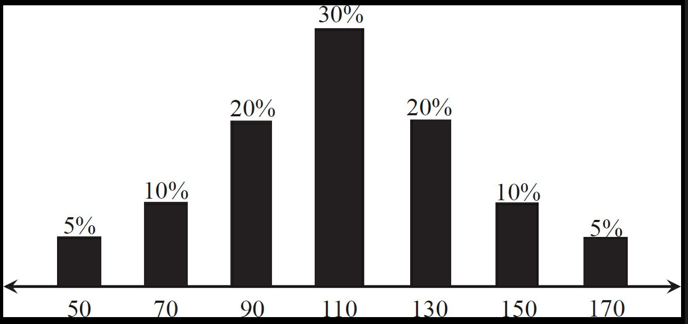
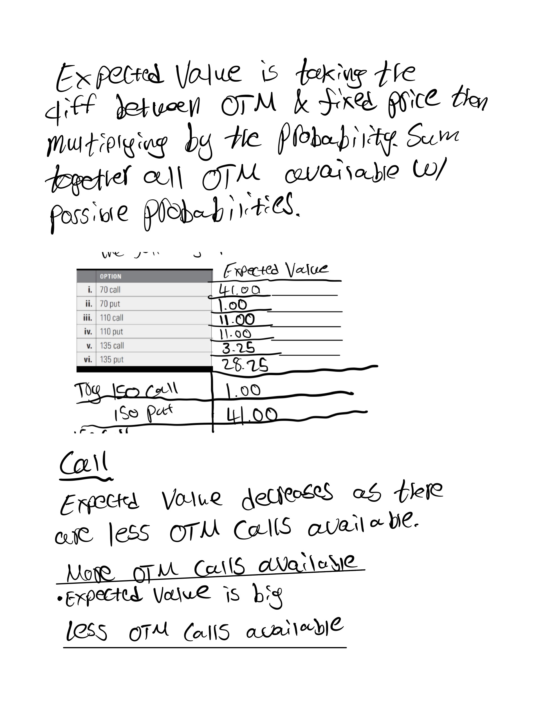

Chapter 5: Theoretical Evaluation
Summary
This chapter touched on forward pricing, expected value, probability, theoretical value, and gave an introduction to the Black Scholes Model.
Forward pricing is what the dollar amount you are investing is actually worth when taking into account a
risk-free interest product such as a bond. If you are buying a stock at $100 and plan to hold it for 2 months the forward price
would be F = S*[1 + r*t]. The books example is that if you held that $100 and put it into a bond giving out 12% a year the forward
price would be $102. When looking at projected theoretical profit or valuation it is important to look at the forward price and discount it from
the projected profits and value for a more accurate expected reward. Expected value was given as the probability of an outcome multiplied
by the outcome itself. Expected value is noted to be used when calculating the theoretical value. The theoretical value is defined as
what you would be willing to pay for an outcome of just breaking even. When calculating theoretical value it's noted to divide the expected
value by the risk-free interest rate cost. The Black Scholes Model was introduced in how it is a model used in pricing options. There are
5 parameters used when pricing an option using the Black Scholes, underlying price of asset, strike price, time to expiration, interest rates,
and implied Volatility.
Exercise problems:
In an arbitrage-free market, where no arbitrage profit is available, the expected value for a contract
at maturity (its average value at maturity) must be equal to its forward price.
1. The following diagram represents the price distribution and associated probabilities for an underlying contract
three months from now.

a. If there is no arbitrage opportunity, what should be the three-month forward price for the underlying contract?
b. What are the expected values for the following options?
c. Can you identify a relationship between the expected value of a call and put with the same exercise price?
d. The theoretical value of an option is the present value of its expected value at expiration.
If all options are European and subject to stock-type settlement, there are three months to expiration,
and annual interest rates are 6.00%, to the nearest .01 what is the theoretical value of each option?
e. Suppose the underlying contract is a stock that is expected to pay a dividend of .75 over the next three months.
Ignoring interest on dividends, to the nearest .01 what should be the current price of the stock?


2. The following diagram represents the probability and price distribution for an underlying stock six months
from now.
a. If the stock is currently trading at a price of 72.50, annual interest rates are 8%, and the stock pays no
dividends, to the nearest .01 what is the stock's six-month forward price, F?
b. Suppose we assign a value of 5.00 to each interval, I. What are the stock prices, F-2I through F+2I, on the
above probability distribution?
c. Using these price intervals, what is the expected value for the underlying stock?
d. Given the forward price and expected value for the underlying stock, what strategy might you pursue?
e. If all options are European and subject to stock-type settlement, there are six months to expiration,
and annual interest rates are 8.00%, to the nearest .01 what is the expected value and theoretical value
of each option?
3. In question 1c the following relationship seemed to be true:
call expected value - put expected value = forward price - exercise price
a. Using the values in question 2, does the relationship still hold true? If not, is there an alternative
relationship?
b. What annual interest rate will result in the six-month forward price for the stock being equal to
the stock's expected value?
c. Suppose we increase the value of I in question 2 to 10.00. What are the new underlying prices, F-2I through F+2I,
on the above probability distribution?
d. What is the expected value for the underlying contract?
e. If all options are European and subject to stock-type settlement, there are six months to expiration, and annual
interest rates are 8.00%, to the nearest .01 what is the expected value and theoretical value of each option?
f. Now what is the relationship between the expected value of a call and put at the same exercise price?